{kind=link}
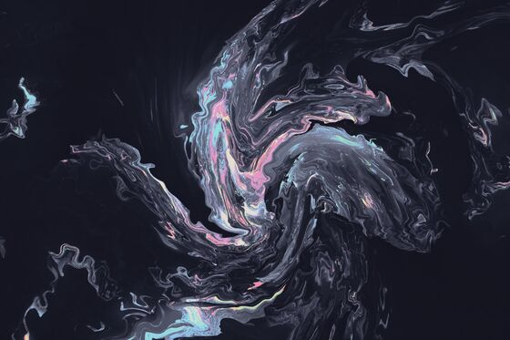
kib-custom
kib-custom
Catppuccin Mocha — matched to alacritty + nvim rice
Every profile in this repo, and what each one is actually for. A rice here is not a colour swap: it sets the bar, the launcher, the lock screen, the terminal, the editor and the wallpaper together, and some of them change what the desktop is — waybar, a dock, conky, yambar, or nothing at all.
Nothing matches that combination.
The one this repo was built around.
1
kib-custom
Catppuccin Mocha — matched to alacritty + nvim rice
Built to be looked at and read: a single Quickshell/QML codebase driving bar, dashboard and controls, with every figure on screen live.
1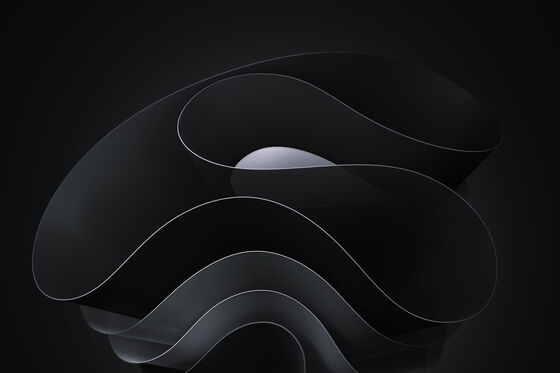
qshell
A demonstration of what Quickshell can do that a status bar cannot. One QML codebase draws a floating bar, a live dashboard and a full-screen command palette: the palette takes keyboard focus, searches the system's application database as you type and launches from it; the dashboard's volume slider moves the PipeWire sink rather than reporting it; the graphs are Canvas repainting from /proc, the gauges animate arcs. The shell registers its own global hotkey and exposes an IPC API, so anything can drive it. Restrained on purpose — the capability is the point, not the decoration.
One shape, more than one palette, swapped live from a control the rice puts on the desktop itself.
1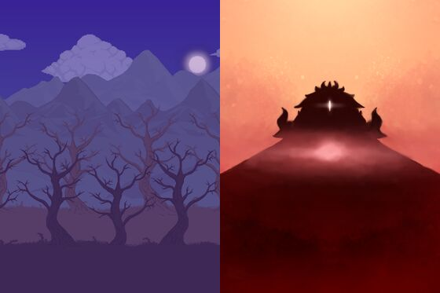
calamity
Terraria, by way of the Calamity mod — and the one rice that writes its own desktop shell. Bar and side menu are quickshell/QML built out of a single Terraria inventory slot: flat fill, hard double edge, pixel type, battery as life hearts. Two biomes, Corruption's shadow-purple or Crimson's crimtane red, swapped live from a slot in the bar, which repaints every app, the wallpaper and the cursor with it.
Ten rices sharing one Quickshell shell and one motion system: three floating islands instead of a bar across the top, a launcher and a dashboard in the same QML, and every press, hover and transition tuned to the same three durations. Only the colour changes between them.
10halcyon
Warm charcoal and coral. Soft light, hard edges nowhere.
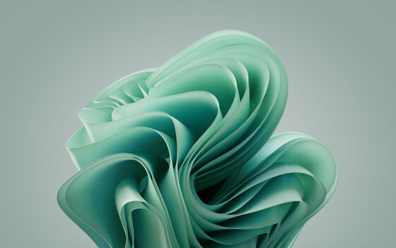
vellum
Warm paper and sage ink. A light rice that is not a white screen.
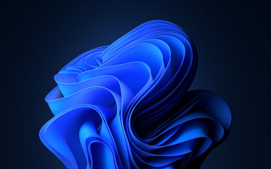
cobalt
Deep water and luminous azure. Cold, clean, wide awake.
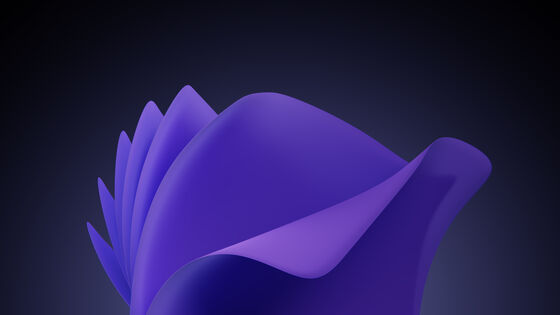
orchid
Plum dusk and lilac light. Soft focus with a bright edge.
seafoam
Deep teal and mint spray. Quiet until something happens.
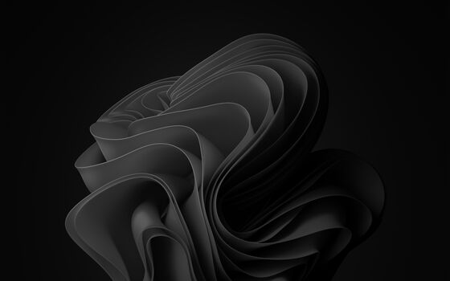
graphite
Neutral to the point of silence, with one warm signal in it.
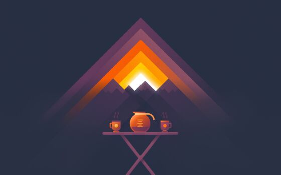
ember
Banked heat. Amber falling into rose, nothing fully cooled.
glacier
Cool glass and ice blue. The bright rice, with the glare taken out.
nocturne
Indigo night, periwinkle light. Dark without being heavy.
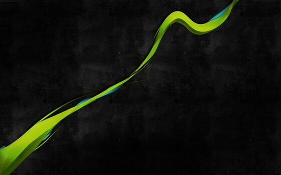
matcha
Soft olive under green light. Organic, low, and very calm.
Rices where the layout changes, not just the colours — different bar shape, different launcher, different amount of chrome.
9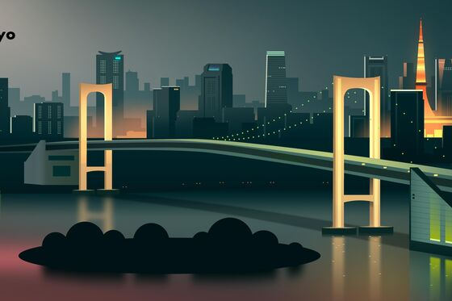
tokyonight
Neon dusk. Deep navy glass pills with a faint inner highlight, and the accent colours carry a soft glow rather than a solid fill — the palette's blues are luminous enough that glow reads better than block colour.
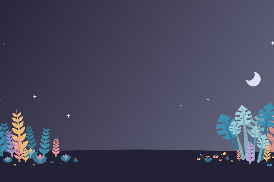
rosepine
Soho at dusk. No hard borders anywhere: modules are defined by a barely lighter surface fill and a lot of breathing room.
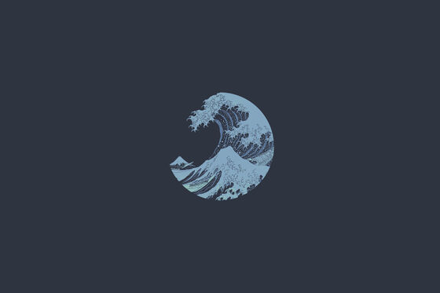
kanagawa
Ink wash. A solid sumi-black bar rather than floating islands: the modules sit on one continuous surface separated by wave-blue rules, like columns of text on a woodblock print.
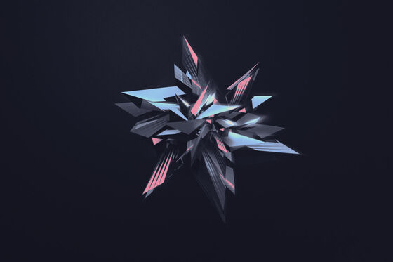
oxocarbon
IBM Carbon. Zero radius, precise 2px rules, near-black ground and one electric magenta.
everforest
Soft forest. Rounded, muted, deliberately low-contrast — this palette is designed to be easy on the eyes for long sessions, so nothing here glows, inverts or shouts.
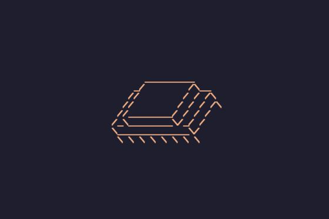
amber
Single-phosphor CRT. The discipline that makes this read as *designed* rather than dated is that there is exactly one hue: #ffb000, varied only in brightness.
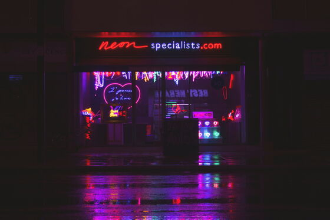
outrun
1984 neon. Indigo night, hot magenta, cyan horizon.
mono
Swiss. There is no colour in this rice — not one hue, anywhere.
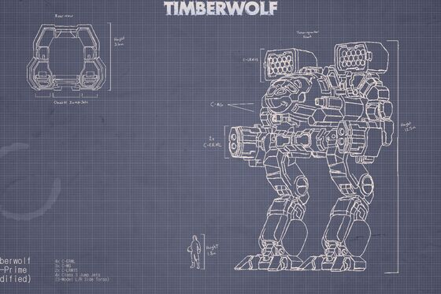
blueprint
Blueprint — drafting table. Cyan hairlines on navy, all monospace.
Faithful takes on palettes you already know, applied across every app.
9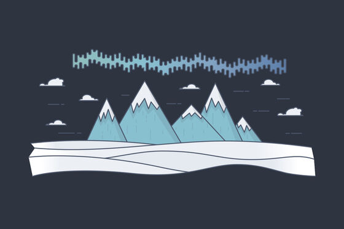
nord
Nord — arctic. Cool blue-greys, frost cyan, zero warmth.
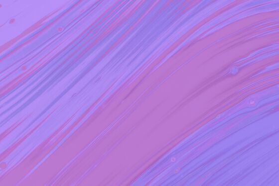
dracula
Dracula — the classic. Violet, magenta and cyan on graphite.
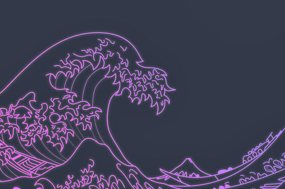
duskfox
Duskfox — muted violet night. Rose Pine's cousin, cooler and dimmer.
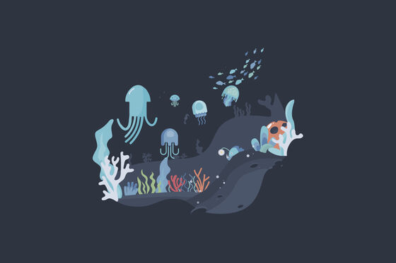
abyss
Abyss — deep water. Near-black navy, teal and electric cyan.
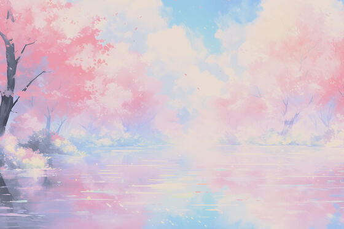
sakura
Sakura — blossom at night. Soft pink and lilac on plum-black.
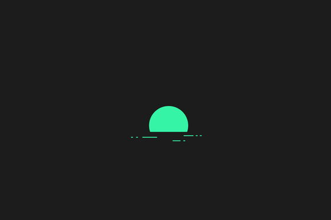
emerald
Emerald — deep green glass. Jewel tones on near-black forest.
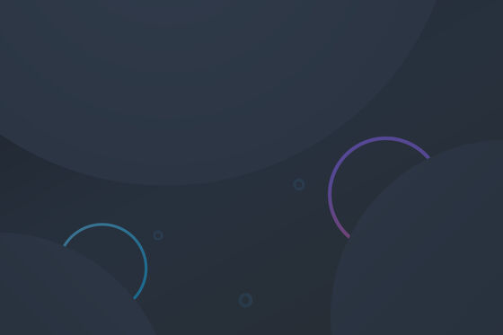
mercury
Mercury — cool silver. Near-monochrome, one ice-blue accent.
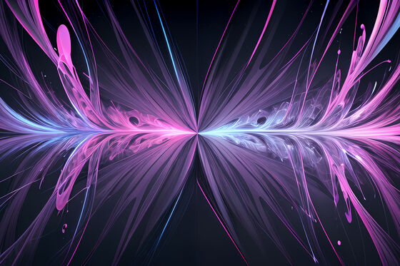
plum
Plum — aubergine and magenta. Rich, saturated, unapologetic.
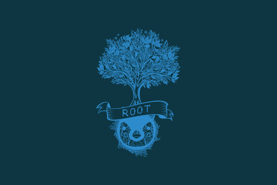
solarized
Solarized Dark — the 2011 classic. Teal base, restrained accents.
Low light, high restraint. Built for a dark room and an OLED panel.
7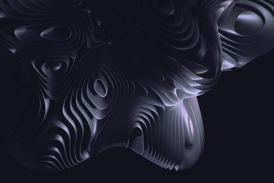
obsidian
Obsidian — true black with a single violet. Built for OLED.
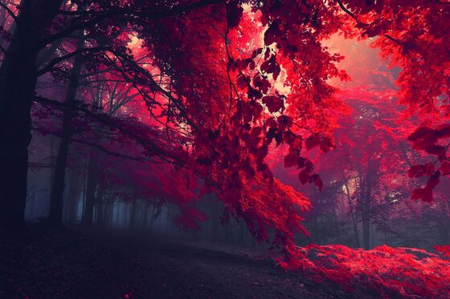
crimson
Crimson — burgundy and oxblood. Warm dark, no brightness anywhere.
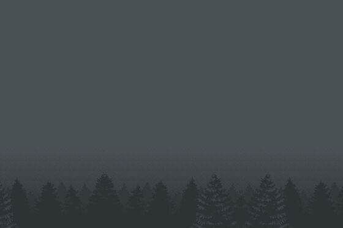
moss
Moss — desaturated sage and stone. The quietest palette here.
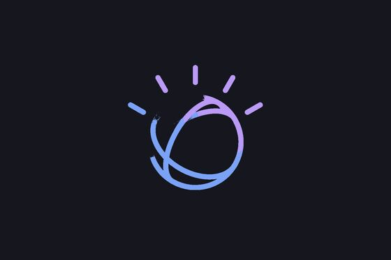
ultraviolet
Ultraviolet — monochrome violet. One hue, twelve values, nothing else.
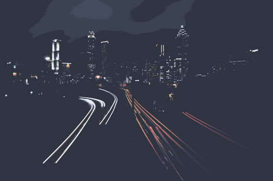
midnight
Midnight — deepest navy. Almost no chrome; status on demand only.
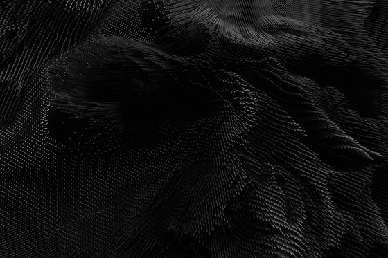
noir
Noir — film stock. Hard greyscale, one crimson accent, deep shadows.
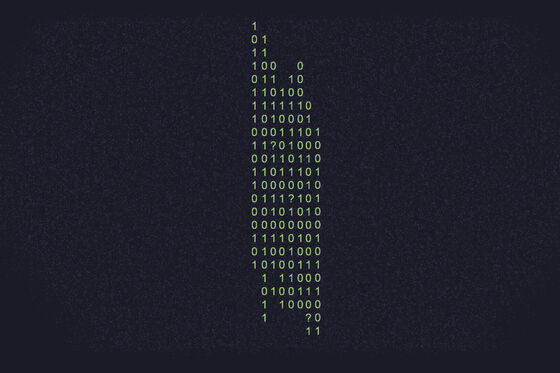
matrix
Matrix — code rain. Pure green on black, no chrome at all.
Genuinely light, not a dark theme with the brightness turned up. Readable in daylight.
4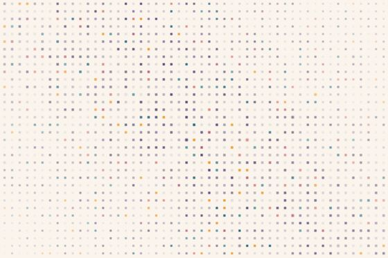
dawn
The light rice. Warm paper ground, ink-violet text, and depth carried by soft shadows instead of borders — on a light surface a 1px outline reads as grubby, while a diffuse shadow reads as lift.
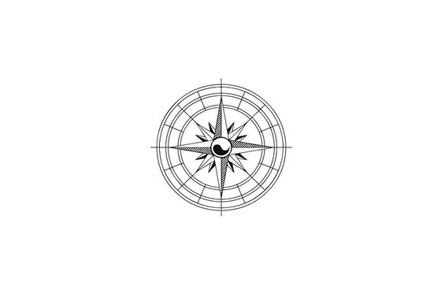
eink
E-ink — paper. Pure black on warm white, no colour, no gloss.
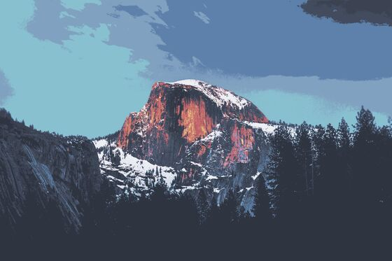
arctic
Arctic — a LIGHT rice. Ice white, pale blue, cold and clean.
porcelain
Porcelain — a LIGHT clinical rice. Cool white, blue-grey, surgical.
Deliberate impersonations, down to the bar geometry and dock behaviour.
2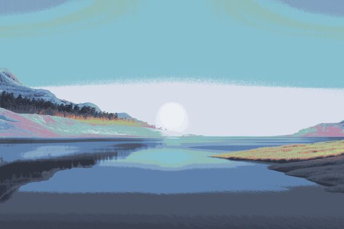
win11
Mica: a near-opaque dark surface, 4px-rounded hover fills, centred icon cluster, and the clock stacked time-over-date hard against the right.
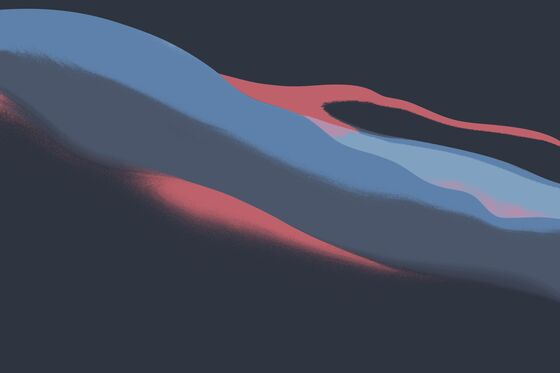
macos
26px, heavily translucent, no rounding (it is flush to the top edge), SF-ish type at 13px, and generous spacing between status items. The dock is nwg-dock, not waybar.
{kind=link}
{kind=link}
{kind=link}
{kind=link}
{kind=link}
{kind=link}
{kind=link}
{kind=link}
{kind=link}
{kind=link}
{kind=link}
{kind=link}
{kind=link}
{kind=link}
{kind=link}
{kind=link}
{kind=link}
{kind=link}
{kind=link}
{kind=link}
{kind=link}
{kind=link}
{kind=link}
{kind=link}
{kind=link}
{kind=link}
{kind=link}
{kind=link}
{kind=link}
{kind=link}
{kind=link}
{kind=link}
{kind=link}
{kind=link}
{kind=link}
{kind=link}
{kind=link}
{kind=link}
{kind=link}
{kind=link}
{kind=link}
{kind=link}
{kind=link}